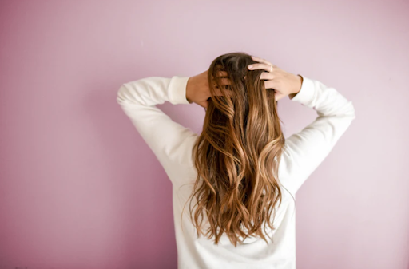
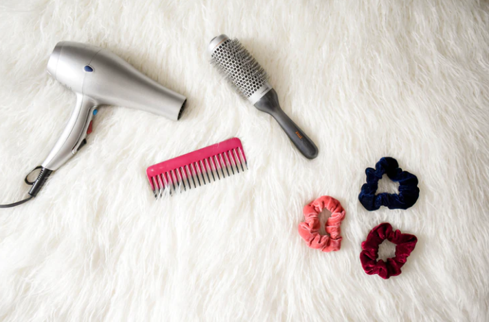

How to Take Care of Damaged Hair

We all want to look good. But do you know what transforms our look the most? It's our hair. But most of us get dry strands, brittle hair, and split ends by styling our hair. In this era of pollution, not only girls but boys are also facing damaged hair. Most of the male celebrities like Paras Chabra, in Big Boss 13, use wigs to groom. We understand that nothing is worse than seeing yourself getting bald day by day. That is why today we'll discuss how to take care of damaged hair.
No doubt many of us spend lots of money on shampoos or different products, but sometimes even they don't work. So if you want frizz-free hair, here you come.
5 Tips on How to Take Care of Damaged Hair Without Spending Money
The following are some tips that you must practice to save your hair from further damage:
Use Shampoo That Contains Moisturizer or Oil
If your hair is dull and dry, use a shampoo that contains oil or moisturizer in it. Also, you can try oiling twice a week. All you have to do is give your scalp a relaxing massage for like half an hour. After that, leave your oily hair for around 2 hours. Then wash your hair with lukewarm water. Try this for like two weeks, and you'll notice a fluffy scalp.
Use Lime Juice and Oil
If you are losing hair due to dandruff, then put two-three drops of lime juice while oiling your hair. Also, remember to leave overnight, not more than that. Otherwise, lime juice can make your hair-thin. However, if you have a dry scalp, then this step is not for you. As lime juice can make your scalp drier, so follow step 1 only if you have dry scalp.
Try Apple Cider Vinegar
Do you have fizzy/fried hairs? Don't worry. Here is the solution. Always wash your head with cold water as frizzy hair is the sign that the inner fiber of your hair is exposed. The pool and the products that you are using on your hair can disturb the pH level of your hair. Thus use apple cider vinegar to maintain the pH level of your hair. Also, use products that have rich Vitamin E and A to prevent breakage.
Take a Balanced Diet
Do you know the food you intake can have significant effects on your hair growth? That is why it is suggested to take a diet loaded with whole grains, fruits, and green vegetables. Most importantly, take Vitamin A, C, iron, and biotin if you want glossy and strong hair.
Only Brush Dry Hair
The all-time mantra is don't brush your hair until they are thoroughly dry. If you use a blow dryer, then hold the blow dryer 15 centimeters away from your hair and keep moving it to protect your hair from damage. While combing your hair, start from the bottom and then move upwards by slowly working on the knots.
So these were some easy tips that each one of us must follow to protect our hair from damage. Start changing your habits and take care of your hair. If you aren't seeing any results in one month, schedule an appointment with a doctor.